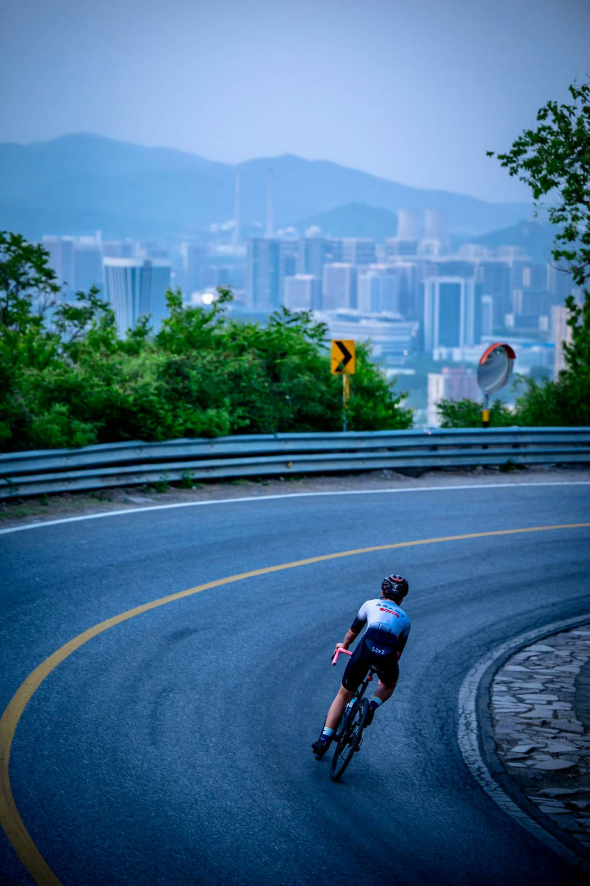
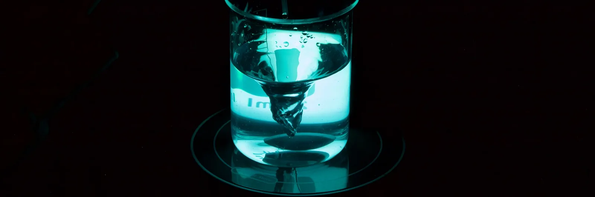
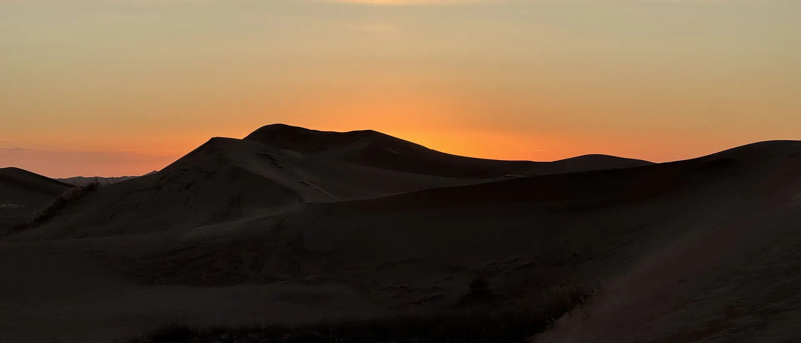
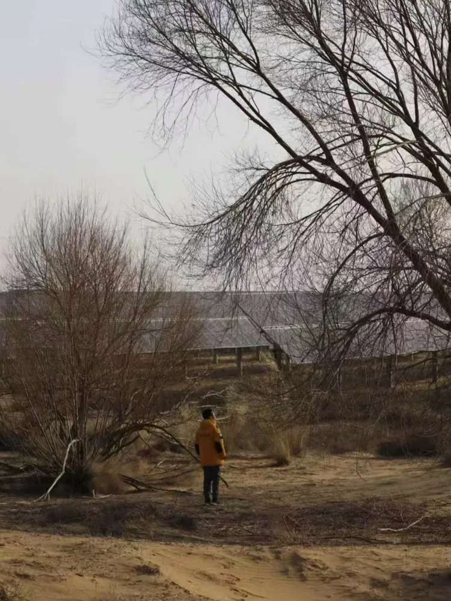
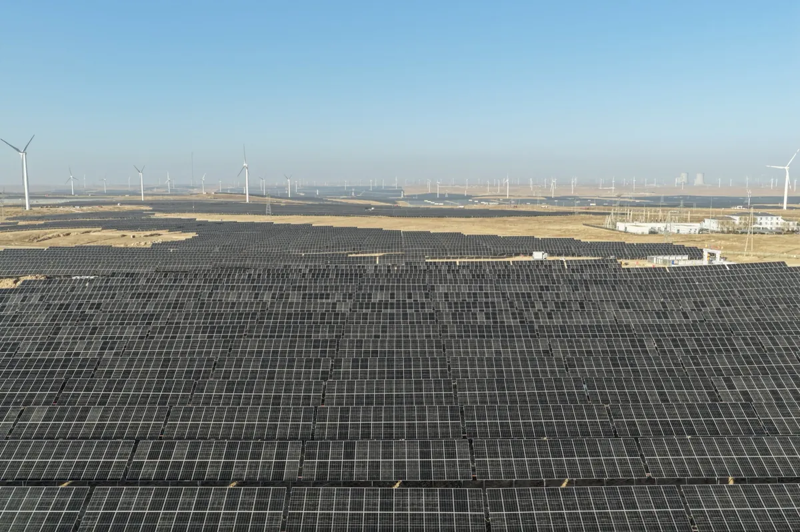
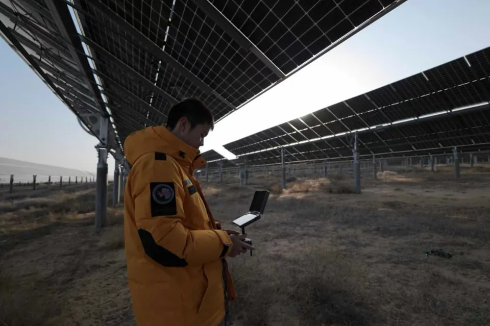
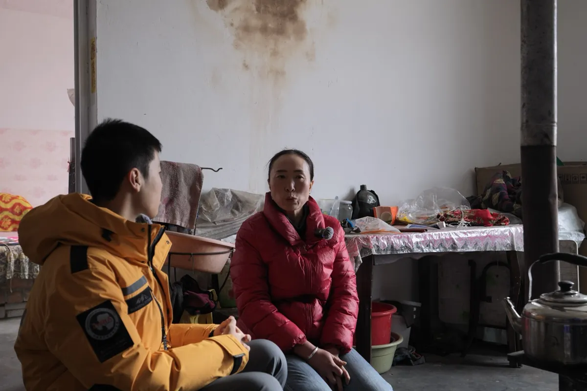
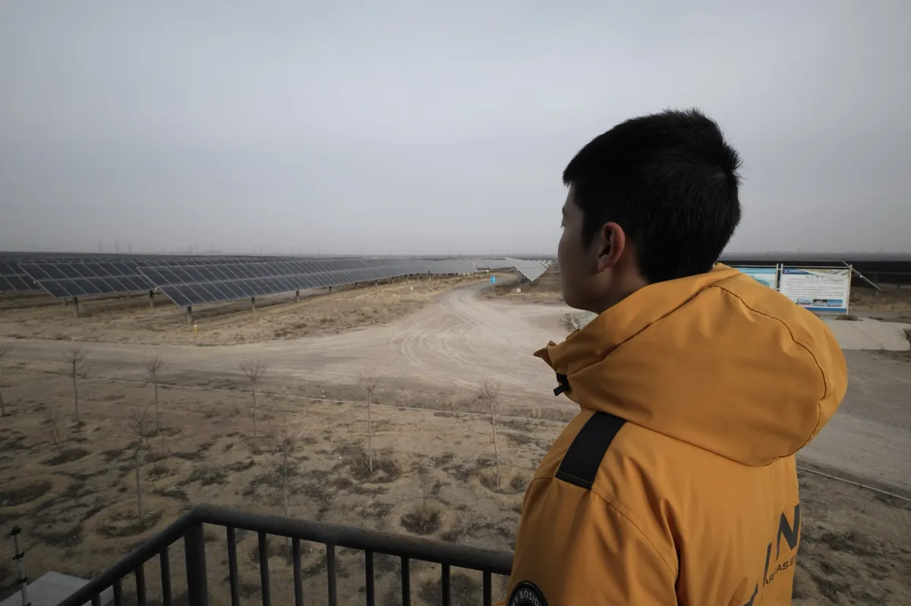
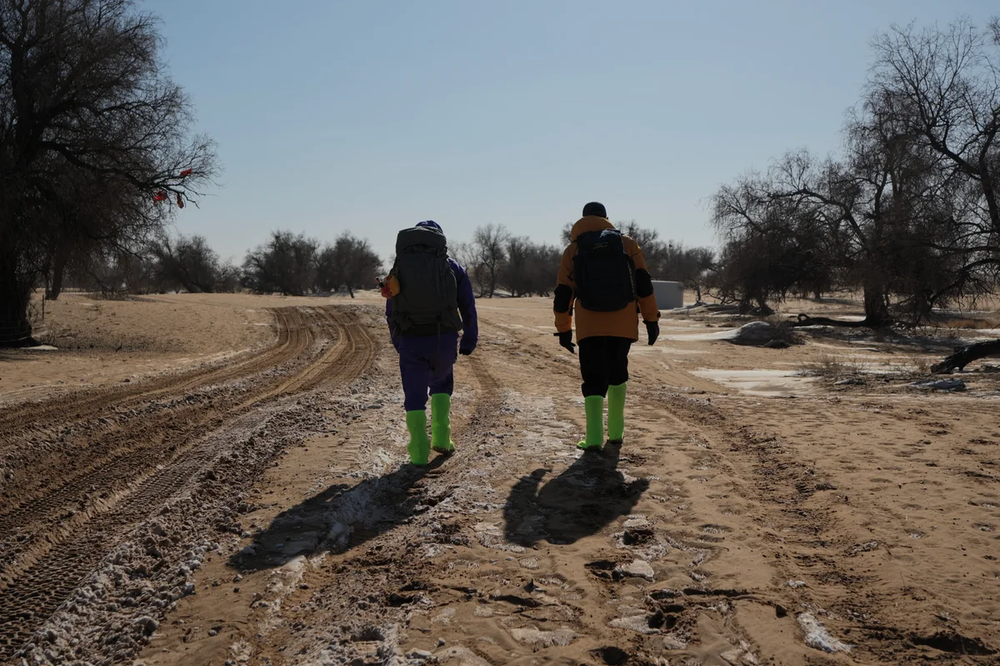
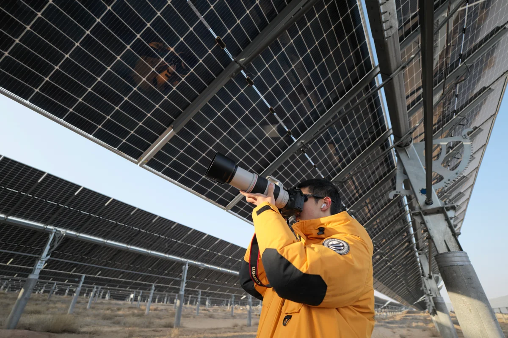

I'm a student at the High School Affiliated to Beijing Normal University in Beijing. Most weeks, I move between a chemistry lab, a video-editing timeline, and my bike.
In the lab, I work on Pt–Fe–CeO₂ catalysts and lithium-battery electrolytes. When a static figure or spreadsheet cannot show the full idea, I build a small interactive tool and let other people try it.
Outside the lab, I photograph birds, people, and desert landscapes. I made The Solar Shepherd with one teammate, ride more than 50 kilometres in most weeks, and return to the workshop with dust on my camera and another hardware revision to make.
The Build
Four projects I built to make a scientific question easier to test, explain, or see. Each one runs in the browser, and each one has public source code.
Chapter 01
I characterize catalysts at Peking University, test battery-electrolyte ideas in the wet lab, and build energy models when the question needs code.

National Yingcai Program · Peking University · 2025
After instrument training, I prepared Pt–Fe–CeO₂ catalysts and used XRD, TEM, and XPS to study how their structure affected glycerol oxidation.
The work became a first-author manuscript now under review at NHSJS, and an interactive research story that I built so the experiment could be explored beyond the paper.
XRD / TEM / XPS
Prepared and characterized catalysts
1st Prize
Xicheng District S&T Innovation Competition
Interactive
Research story built for the web
2026
Independent Project · Tsinghua University Chemical Engineering Lab
Testing 4,800 formulas one by one made no sense, so I built a model to shortlist electrolyte additives and designed wet-lab experiments around five natural polyphenols. The experiments validated the model's top picks; I then turned the workflow into a public web app and prepared the project for the S.-T. Yau High School Science Award.
Summer 2026
Stanford Summer Session
During eight residential weeks, I studied Chemical Principles I and Energy Storage Integration. For the latter course's two-person final project, I built most of the dispatch-scheduling model and drafted the main report. I earned an A in both courses.
I went to the Tengger Desert to see what the solar panels changed on the ground.
Chapter 02
A camera changed the scale of the question: from how a solar farm works to what it changes for the people living beside it.

GENIUS Olympiad · Short Film Honorable Mention · 2026
Field documentary · Tengger Desert · 5:56
With one teammate, I studied solar-energy storage and sand control in the Tengger Desert, filmed beneath the photovoltaic arrays, and interviewed a local shepherd.
What he said about land and livelihood changed our edit. We rebuilt the film around what the project meant for someone living beside it, not only around how the technology worked.
The question changed
I started by asking how the solar farm worked. I finished by asking what it changed for the people living beside it.2
People on the production team
Tengger
Desert field location
1
Local shepherd interviewed
5:56
Finished short documentary
“The desert is healing, and technology — technology is just the catalyst.”
— The Solar Shepherd, closing narration
Behind the Scenes







fieldwork listening→ revision
“Less sand. More grass. Fatter sheep.”
— The shepherd, Tengger Desert
Chapter 03
I run a 40-member science club, test bike hardware with my cycling team, and turn battery-safety research into material residents can use.
Founder & President · 40 members
I founded the club in Grade 10 and now lead 40 members. We have returned to my former primary school for two years of hands-on chemistry outreach, and once cut our flashiest demonstration after our own safety review.
Hardware · 3 Prototypes
After AP Research, I took the design from paper to three prototypes. Field tests with my cycling team produced the baseline data now guiding a lower-drag Gen 2 build.
Community Safety · Team of 5
I led a five-person team that adapted our battery-safety research into illustrated resident guides. We ran two outreach sessions, revised the material from resident surveys, and laid the groundwork for the next student team to continue it.
Recognition
A short selection across research, film, chemistry, and school life.
The Network
Research demos, chemistry tools, photography, film, and the source code behind them — all in one compact directory.